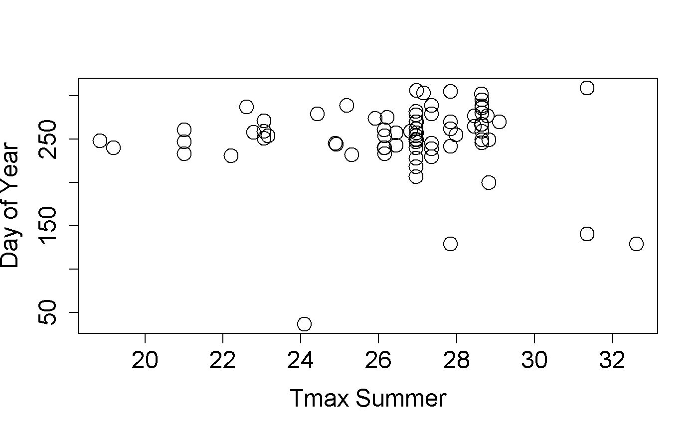

03_individual_phenometrics.RmdWhile Status and Intensity data provide a direct and complete look at the observational data, some analyses rely on more synthesized output. Individual Phenometrics are derived from phenophase status data and provide estimates of phenophase onset and end dates based on the first and last “Yes” status values for organisms within a specified season of interest. Each row in this data type is comprised of values that are derived from a string of consecutive “Yes” status reports without an intervening “No” status report for a single phenophase for an individual plant or animal species at a site, called a “series”. For plants, this data type provides information on the onset and end of a phenophase on an individual plant. For animals, it provides information on the onset and end of the presence of an animal species at a site. As animal presence at a site is much more likely to be interrupted by absence than the presence of a phenophase on a plant, Status and Intensity data or Site Phenometrics may be more appropriate for investigating animal phenology. However, we provide animal phenology in the same format as individual plants in this data type to allow users to readily compare individual plant phenology with animal activity.
Note that more than one series may exist for a given phenophase in an individual plant or animal species within a single growing season or year, this might occur in the case of leaf bud break followed by a killing frost and second round of breaking leaf buds. It could also occur at group sites where two or more observers are reporting on the same plant on sequential days but are not in agreement on phenophase status.
Any call for individual phenometrics requires chronological bounds, usually a calendar year, as determining onset and end depend on knowing what the time frame of interest is. If you query the services directly (without the benefit of this library) it’s possible to specify arbitrary dates, in contrast this library allows you to specify a series of calendar years as input.
Here’s an example of how to query the services for individual phenometrics data. Note that the overall structure and parameters are very similar to the call for status data. The biggest difference in this case is that start and end date parameters are now replaced with a ‘years’ array, which predictably takes a set of year values with which to query the service.
npn_download_individual_phenometrics(
request_source='Your Name Here',
years=c(2013,2014,2015,2016),
species_id=c(210),
download_path="saguaro_data_2013_2016.csv"
)In this example, we’re able to see individual saguaro phenology for 2013 through 2016. The results returned from the service is a tabular set of records, giving start and end date by individual saguaro plant. By default, each record contains information about the location, species, phenophase, and start and end dates.
Climate data from DayMet can also be acquired with Status & Intensity, Individual Phenometrics and Site Phenometric data types, by setting the climate_data parameter to true. In this example, we are getting colored leaves (phenophase ID is 498) data for birches, using the four birch species IDs, for 2015:
npn_download_individual_phenometrics(
request_source = 'Your Name Here',
years = c('2015'),
species_ids = c(97, 98, 99, 430),
phenophase_ids = c(498),
climate_data = TRUE,
download_path = 'Betula_data_2015.csv'
)To show what this looks like, we can plot the day of year of the first observation of colored leaves in birches (genus Betula) against summer Tmax.
BetulaLeaf <-read.csv(
'Betula_data_2015.csv',
header = TRUE,
na=-9999,
stringsAsFactors = FALSE
)
plot(
first_yes_doy~tmax_summer,
data=BetulaLeaf,
ylab=c("Day of Year"),
xlab=c("Tmax Summer"),
cex=2,
cex.axis=1.5,
cex.lab=1.5,
pch=21
)